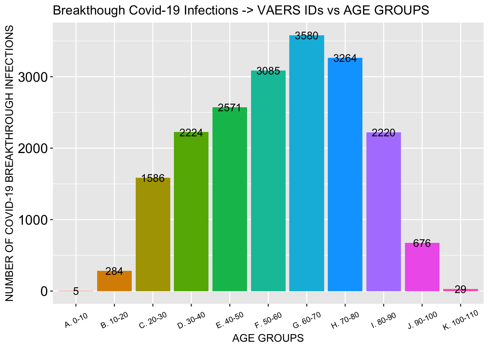

This is an R Markdown sheet where the plots are generated from the VAERS data.
library("readr")
library("tidyverse")## ── Attaching packages ─────────────────────────────────────── tidyverse 1.3.1 ──## ✓ ggplot2 3.3.3 ✓ dplyr 1.0.6
## ✓ tibble 3.1.1 ✓ stringr 1.4.0
## ✓ tidyr 1.1.3 ✓ forcats 0.5.1
## ✓ purrr 0.3.4## ── Conflicts ────────────────────────────────────────── tidyverse_conflicts() ──
## x dplyr::filter() masks stats::filter()
## x dplyr::lag() masks stats::lag()library("dplyr")
library("ggplot2")
library("stringr")
library("DT")
library("reshape2")##
## Attaching package: 'reshape2'## The following object is masked from 'package:tidyr':
##
## smithslibrary("data.table")##
## Attaching package: 'data.table'## The following objects are masked from 'package:reshape2':
##
## dcast, melt## The following objects are masked from 'package:dplyr':
##
## between, first, last## The following object is masked from 'package:purrr':
##
## transposelibrary("plotly")##
## Attaching package: 'plotly'## The following object is masked from 'package:ggplot2':
##
## last_plot## The following object is masked from 'package:stats':
##
## filter## The following object is masked from 'package:graphics':
##
## layout#SET KNIT CONDITIONS FOR CHUNKS IN MARKDOWN FILE
#SYMPTOMS
#DATA
#VAX
#NOW MERGE THE FILES
## # A tibble: 3 x 3
## # Groups: SEX [3]
## SEX n PERC_FEMALE
## <chr> <int> <dbl>
## 1 F 158107 72.6
## 2 M 53020 24.4
## 3 U 6589 3.03Death count
## [1] 4169Severe Adverse Event count and percentage and Mild Adverse Event count
## [1] 37000## [1] 16.99462#BAR PLOT FOR SAE COMPARISON TO STANDARD
#STRINGS FOR CV, NEURO AND IMMUNO and RENAL and GASTRO GROUPINGS
Cardiovascular, neurological and immunological AE counts
## [1] 37577## [1] 23358## [1] 81954Breakthrough COVID-19 case count and of those, deaths and percentage deaths
## [1] 3742## [1] 191## [1] 5.104222#****** FROM HERE DOWN IS ALL AGE GROUPED STUFF ****** #NOW YOU CAN ADD COLUMNS FOR AGE GROUPS #FIRST CREATE AGE GROUPS FUNCTION
DISTRIBUTION OF ALL DATA BY AGE GROUP
## AGE_YRS n skew
## 1 0.08 8 1.348615
## 2 0.17 9 1.348615
## 3 0.25 4 1.348615
## 4 0.33 5 1.348615
## 5 0.42 2 1.348615
## 6 0.50 6 1.348615
## 7 0.58 8 1.348615
## 8 0.67 2 1.348615
## 9 0.75 3 1.348615
## 10 0.83 1 1.348615
## 11 0.92 1 1.348615
## 12 1.00 18 1.348615
## 13 1.08 22 1.348615
## 14 1.17 2 1.348615
## 15 1.25 4 1.348615
## 16 1.33 2 1.348615
## 17 1.42 2 1.348615
## 18 1.50 2 1.348615
## 19 1.58 2 1.348615
## 20 1.75 1 1.348615
## 21 1.83 2 1.348615
## 22 2.00 5 1.348615
## 23 2.17 1 1.348615
## 24 3.00 6 1.348615
## 25 4.00 11 1.348615
## 26 4.33 1 1.348615
## 27 4.42 1 1.348615
## 28 5.00 2 1.348615
## 29 5.25 1 1.348615
## 30 5.33 1 1.348615
## 31 5.50 1 1.348615
## 32 5.92 1 1.348615
## 33 6.00 8 1.348615
## 34 7.00 7 1.348615
## 35 8.00 8 1.348615
## 36 9.00 2 1.348615
## 37 10.00 5 1.348615
## 38 11.00 15 1.348615
## 39 12.00 15 1.348615
## 40 13.00 22 1.348615
## 41 14.00 48 1.348615
## 42 15.00 163 1.348615
## 43 16.00 708 1.348615
## 44 17.00 1232 1.348615
## 45 18.00 775 1.348615
## 46 19.00 993 1.348615
## 47 20.00 1142 1.348615
## 48 21.00 1380 1.348615
## 49 22.00 1634 1.348615
## 50 23.00 1832 1.348615
## 51 24.00 2087 1.348615
## 52 25.00 2305 1.348615
## 53 26.00 2495 1.348615
## 54 27.00 2651 1.348615
## 55 28.00 2739 1.348615
## 56 29.00 2904 1.348615
## 57 30.00 3127 1.348615
## 58 31.00 3163 1.348615
## 59 32.00 3288 1.348615
## 60 33.00 3408 1.348615
## 61 34.00 3431 1.348615
## 62 35.00 3462 1.348615
## 63 36.00 3498 1.348615
## 64 37.00 3729 1.348615
## 65 38.00 3722 1.348615
## 66 39.00 3702 1.348615
## 67 40.00 3716 1.348615
## 68 41.00 3697 1.348615
## 69 42.00 3542 1.348615
## 70 43.00 3526 1.348615
## 71 44.00 3309 1.348615
## 72 45.00 3459 1.348615
## 73 46.00 3305 1.348615
## 74 47.00 3159 1.348615
## 75 48.00 3380 1.348615
## 76 49.00 3562 1.348615
## 77 50.00 3919 1.348615
## 78 51.00 3578 1.348615
## 79 52.00 3436 1.348615
## 80 53.00 3281 1.348615
## 81 54.00 3256 1.348615
## 82 55.00 3273 1.348615
## 83 56.00 3479 1.348615
## 84 57.00 3429 1.348615
## 85 58.00 3404 1.348615
## 86 59.00 3454 1.348615
## 87 60.00 3451 1.348615
## 88 61.00 3329 1.348615
## 89 62.00 3224 1.348615
## 90 63.00 3153 1.348615
## 91 64.00 3111 1.348615
## 92 65.00 4137 1.348615
## 93 66.00 3970 1.348615
## 94 67.00 3760 1.348615
## 95 68.00 3608 1.348615
## 96 69.00 3366 1.348615
## 97 70.00 3408 1.348615
## 98 71.00 3231 1.348615
## 99 72.00 2958 1.348615
## 100 73.00 2958 1.348615
## 101 74.00 2712 1.348615
## 102 75.00 2214 1.348615
## 103 76.00 2036 1.348615
## 104 77.00 1998 1.348615
## 105 78.00 1834 1.348615
## 106 79.00 1542 1.348615
## 107 80.00 1382 1.348615
## 108 81.00 1131 1.348615
## 109 82.00 1118 1.348615
## 110 83.00 1037 1.348615
## 111 84.00 902 1.348615
## 112 85.00 797 1.348615
## 113 86.00 741 1.348615
## 114 87.00 700 1.348615
## 115 88.00 583 1.348615
## 116 89.00 540 1.348615
## 117 90.00 487 1.348615
## 118 91.00 392 1.348615
## 119 92.00 344 1.348615
## 120 93.00 289 1.348615
## 121 94.00 223 1.348615
## 122 95.00 202 1.348615
## 123 96.00 151 1.348615
## 124 97.00 106 1.348615
## 125 98.00 72 1.348615
## 126 99.00 44 1.348615
## 127 100.00 45 1.348615
## 128 101.00 27 1.348615
## 129 102.00 12 1.348615
## 130 103.00 11 1.348615
## 131 104.00 3 1.348615
## 132 105.00 4 1.348615
## 133 106.00 2 1.348615
## 134 113.00 1 1.348615
## 135 115.00 5 1.348615
## 136 119.00 1 1.348615#SOME CHARTS FOR BREAKTHROUGH COVID CASES (BCC)
BREAKTHROUGH COVID CASES by manufacturer.
## # A tibble: 3 x 4
## # Groups: VAX_MANU [3]
## VAX_MANU n PERC Round
## <chr> <int> <dbl> <dbl>
## 1 "JANSSEN" 33324 15.3 15.3
## 2 "MODERNA" 103129 47.4 47.4
## 3 "PFIZER\\BIONTECH" 79582 36.6 36.6## VAX_MANU n PERC Round
## 1 JANSSEN 273 7.295564 7.30
## 2 MODERNA 713 19.053982 19.05
## 3 PFIZER\\BIONTECH 2740 73.222875 73.22This is the pie chart for the dead of the breakthrough cases.
## VAX_MANU DIED n PERC Round
## 1 JANSSEN Y 14 0.3741315 0.37
## 2 MODERNA Y 86 2.2982362 2.30
## 3 PFIZER\\BIONTECH Y 88 2.3516836 2.35Pie chart for distribution of vax manu data in US population (U.S. COVID-19 Vaccine Delivered by Vaccine Type
Date generated: CDC | Data as of: May 4, 2021 6:00am ET. Posted: Tuesday, May 25, 2021 6:00 PM ET https://covid.cdc.gov/covid-data-tracker/#vaccinations
## VAX_MANU FVP TOTAL_PMJ Percentage_PMJ Round
## 1 PFIZER/BIONTECH 67434538 130561088 51.649798 51.65
## 2 MODERNA 52916100 130561088 40.529763 40.53
## 3 JANSSEN 10210450 130561088 7.820439 7.82Pie chart for Breakthrough COVID-19 cases by age group
## # A tibble: 8 x 6
## # Groups: AGE_GROUP, DIED [8]
## AGE_GROUP DIED n SUM Perc_D_tot Round
## <chr> <chr> <int> <dbl> <dbl> <dbl>
## 1 D. 30-40 Y 1 1 0.0442 0.04
## 2 E. 40-50 Y 2 2 0.0883 0.09
## 3 F. 50-60 Y 13 13 0.574 0.57
## 4 G. 60-70 Y 20 20 0.883 0.88
## 5 H. 70-80 Y 45 45 1.99 1.99
## 6 I. 80-90 Y 64 64 2.83 2.83
## 7 J. 90-100 Y 26 26 1.15 1.15
## 8 K. 100-110 Y 3 3 0.132 0.13Pie chart for Breakthrough COVID-19 cases by age group WHO DIED
NUMBER OF SPONTANEOUS ABORTIONS
## [1] 241DISTRIBUTION OF SPONTANEOUS ABORTIONS BY AGE
 CHI-SQUARE TEST and CALCULATION OF length of time between VD and OD for spontaneous abortions
CHI-SQUARE TEST and CALCULATION OF length of time between VD and OD for spontaneous abortions
## diff_in_days n OBSERVED Percentage_OBSERVED EXPECTED Percentage_EXPECTED
## 1 0 days 35 35 16.055046 5 2.118644
## 2 1 days 19 19 8.715596 5 2.118644
## 3 2 days 13 13 5.963303 5 2.118644
## 4 7 days 10 10 4.587156 5 2.118644
## 5 4 days 9 9 4.128440 5 2.118644
## 6 5 days 8 8 3.669725 5 2.118644##
## Chi-squared test for given probabilities
##
## data: MERGED_SYM_DAT_VAX_05_21_21_151700kb_SA_VD_OD$OBSERVED
## X-squared = 290.9, df = 42, p-value < 2.2e-16HEATMAP showing correlation between VD and OD for spontaneous abortions

 **** Symmetric: Values between -0.5 to 0.5
Moderated Skewed data: Values between -1 and -0.5 or between 0.5 and 1
Highly Skewed data: Values less than -1 or greater than 1 *****
**** Symmetric: Values between -0.5 to 0.5
Moderated Skewed data: Values between -1 and -0.5 or between 0.5 and 1
Highly Skewed data: Values less than -1 or greater than 1 *****
Distribution of all Breakthrough COVID-19 cases by age group
## AGE_GROUP n skew
## 1 B. 10-20 12 -0.8365783
## 2 C. 20-30 193 -0.8365783
## 3 D. 30-40 297 -0.8365783
## 4 E. 40-50 343 -0.8365783
## 5 F. 50-60 364 -0.8365783
## 6 G. 60-70 380 -0.8365783
## 7 H. 70-80 327 -0.8365783
## 8 I. 80-90 235 -0.8365783
## 9 J. 90-100 106 -0.8365783
## 10 K. 100-110 8 -0.8365783Breakthrough COVID-19 Cases by update date
 LET’S count how many days we have between vax and death and hospital and ER…
LET’S count how many days we have between vax and death and hospital and ER…
## # A tibble: 6 x 6
## diff_in_days n OBSERVED Percentage_OBSERVED EXPECTED Percentage_EXPECTED
## <drtn> <int> <int> <dbl> <int> <dbl>
## 1 1 days 431 431 12.2 69 1.81
## 2 2 days 290 290 8.22 69 1.81
## 3 0 days 215 215 6.09 69 1.81
## 4 3 days 207 207 5.86 69 1.81
## 5 4 days 169 169 4.79 69 1.81
## 6 5 days 149 149 4.22 69 1.81##
## Chi-squared test for given probabilities
##
## data: MERGED_SYM_DAT_VAX_05_21_21_151700kb_VD_DD$OBSERVED
## X-squared = 4404, df = 50, p-value < 2.2e-16Percentage_OBSERVED AGAINST Percentage_EXPECTED plots to show causation in grouped AEs
 #HOW ABOUT HEATMAPS?
#HOW ABOUT HEATMAPS?
 #LET’S count how many days we have between vax and CV AND NEURO AND IMMUNO…
#LET’S count how many days we have between vax and CV AND NEURO AND IMMUNO…
## diff_in_days n OBSERVED Percentage_OBSERVED EXPECTED Percentage_EXPECTED
## 1 0 days 19372 19372 55.925402 679.1961 1.865411
## 2 1 days 7254 7254 20.941713 679.1961 1.865411
## 3 2 days 1719 1719 4.962614 679.1961 1.865411
## 4 3 days 997 997 2.878259 679.1961 1.865411
## 5 7 days 644 644 1.859176 679.1961 1.865411
## 6 4 days 621 621 1.792777 679.1961 1.865411##
## Chi-squared test for given probabilities
##
## data: MERGED_SYM_DAT_VAX_05_21_21_151700kb_CV_VD_OD$OBSERVED
## X-squared = 603917, df = 50, p-value < 2.2e-16#NOW I WOULD LIKE TO PLOT Percentage_OBSERVED AGAINST Percentage_EXPECTED
 #HOW ABOUT HEATMAPS?
#HOW ABOUT HEATMAPS?

## diff_in_days n OBSERVED Percentage_OBSERVED EXPECTED Percentage_EXPECTED
## 1 0 days 9522 9522 42.928633 408.8824 1.84339
## 2 1 days 5278 5278 23.795140 408.8824 1.84339
## 3 2 days 1227 1227 5.531761 408.8824 1.84339
## 4 3 days 686 686 3.092737 408.8824 1.84339
## 5 7 days 590 590 2.659934 408.8824 1.84339
## 6 8 days 522 522 2.353365 408.8824 1.84339##
## Chi-squared test for given probabilities
##
## data: MERGED_SYM_DAT_VAX_05_21_21_151700kb_NEURO_VD_OD$OBSERVED
## X-squared = 277082, df = 50, p-value < 2.2e-16#NOW I WOULD LIKE TO PLOT Percentage_OBSERVED AGAINST Percentage_EXPECTED
#HOW ABOUT HEATMAPS?

## diff_in_days n OBSERVED Percentage_OBSERVED EXPECTED Percentage_EXPECTED
## 1 0 days 28095 28095 35.203238 1494.098 1.872116
## 2 1 days 20500 20500 25.686648 1494.098 1.872116
## 3 7 days 5003 5003 6.268795 1494.098 1.872116
## 4 8 days 4685 4685 5.870339 1494.098 1.872116
## 5 2 days 4142 4142 5.189956 1494.098 1.872116
## 6 9 days 2182 2182 2.734062 1494.098 1.872116##
## Chi-squared test for given probabilities
##
## data: MERGED_SYM_DAT_VAX_05_21_21_151700kb_IMMUNO_VD_OD$OBSERVED
## X-squared = 788359, df = 50, p-value < 2.2e-16#NOW I WOULD LIKE TO PLOT Percentage_OBSERVED AGAINST Percentage_EXPECTED
 #HOW ABOUT HEATMAPS?
#HOW ABOUT HEATMAPS?
 NOW YOU CAN IMPLEMENT OUR AGE_GROUPED_BY_DECADE FUNCTION FOR THE SEPARATE MANUFACTURER DATA FRAMES
NOW YOU CAN IMPLEMENT OUR AGE_GROUPED_BY_DECADE FUNCTION FOR THE SEPARATE MANUFACTURER DATA FRAMES
Histograms to show distribution by age group in Death, Hospital, ER, CV, Neuro and Immuno AE groups

## AGE_GROUP n skew
## 1 A. 0-10 14 1.657418
## 2 B. 10-20 10 1.657418
## 3 C. 20-30 31 1.657418
## 4 D. 30-40 68 1.657418
## 5 E. 40-50 126 1.657418
## 6 F. 50-60 283 1.657418
## 7 G. 60-70 678 1.657418
## 8 H. 70-80 943 1.657418
## 9 I. 80-90 987 1.657418
## 10 J. 90-100 525 1.657418
## 11 K. 100-110 39 1.657418
## AGE_GROUP n skew
## 1 A. 0-10 11 -0.9759104
## 2 B. 10-20 585 -0.9759104
## 3 C. 20-30 4259 -0.9759104
## 4 D. 30-40 6061 -0.9759104
## 5 E. 40-50 6069 -0.9759104
## 6 F. 50-60 6177 -0.9759104
## 7 G. 60-70 5829 -0.9759104
## 8 H. 70-80 4054 -0.9759104
## 9 I. 80-90 1538 -0.9759104
## 10 J. 90-100 413 -0.9759104
## 11 K. 100-110 15 -0.9759104## AGE_GROUP n skew
## 1 A. 0-10 22 -0.2925658
## 2 B. 10-20 233 -0.2925658
## 3 C. 20-30 2080 -0.2925658
## 4 D. 30-40 3557 -0.2925658
## 5 E. 40-50 3818 -0.2925658
## 6 F. 50-60 3956 -0.2925658
## 7 G. 60-70 3881 -0.2925658
## 8 H. 70-80 2420 -0.2925658
## 9 I. 80-90 857 -0.2925658
## 10 J. 90-100 228 -0.2925658
## 11 K. 100-110 13 -0.2925658
## AGE_GROUP n skew
## 1 A. 0-10 38 -0.7341831
## 2 B. 10-20 664 -0.7341831
## 3 C. 20-30 8568 -0.7341831
## 4 D. 30-40 14411 -0.7341831
## 5 E. 40-50 14085 -0.7341831
## 6 F. 50-60 13507 -0.7341831
## 7 G. 60-70 13769 -0.7341831
## 8 H. 70-80 9326 -0.7341831
## 9 I. 80-90 2366 -0.7341831
## 10 J. 90-100 396 -0.7341831
## 11 K. 100-110 15 -0.7341831#MAKING A TABLE OF THE DATA HERE INSTEAD OF IN EXCEL
## DATE IDs FV US_population DEATH HOSPITAL ER SAE COVID
## 1 2021-01-16 1431 4582089 330175152 137 338 338 625 194
## 2 2021-01-23 2160 7664179 330175733 281 607 576 1101 254
## 3 2021-01-30 2946 11037313 330176314 456 953 847 1668 326
## 4 2021-02-13 5351 18895522 330176895 810 1747 1493 2977 619
## 5 2021-02-27 9286 27167910 330177476 984 2195 2187 4017 717
## 6 2021-03-05 14701 31720149 330178057 1162 2676 2980 5193 776
## 7 2021-03-12 20586 35000000 330178638 1419 3412 3855 6648 943
## 8 2021-03-19 27955 44145522 330179219 1561 3913 4763 8000 1057
## 9 2021-03-26 34121 48700000 330179800 1957 4387 5529 9268 1169
## 10 2021-04-02 40348 57980000 330180381 2149 4758 6329 10350 1267
## 11 2021-04-09 46163 64420000 330193928 2240 4906 6983 10484 1375
## 12 2021-04-16 57641 80610000 330209443 2500 5009 8084 12464 1404
## 13 2021-04-23 75370 89250000 330244315 3084 6215 10375 15713 1587
## 14 2021-04-30 108191 99670000 330239326 3442 8099 14553 21158 1930
## 15 2021-05-07 146622 108930000 330757983 3731 10648 19620 27642 2776
## 16 2021-05-14 182559 118990000 332700813 4015 11557 23641 32277 3317
## 17 2021-05-21 217716 126610000 332738974 4169 12625 27774 37000 3742
## CV NEURO IMMUNO
## 1 271 157 310
## 2 417 223 425
## 3 586 307 523
## 4 1088 538 930
## 5 1794 963 2360
## 6 2707 1583 4533
## 7 3768 2347 6406
## 8 5049 3370 9150
## 9 6079 4024 11663
## 10 7200 4706 14041
## 11 8194 5303 16480
## 12 9872 6413 21146
## 13 12999 8122 28070
## 14 18834 11693 40021
## 15 25254 15741 54723
## 16 31437 19493 68836
## 17 37577 23358 81954#STATISTIC SAE/MILLION FV
#THIS IS THE PERCENTAGE INCREASE CALCULATION OF ID PER WEEK
## [1] 50.9433962 36.3888889 81.6361168 73.5376565 58.3135904 40.0312904
## [7] 35.7961722 22.0568771 18.2497582 14.4121146 24.8640686 30.7576204
## [13] 43.5465039 35.5214389 24.5099644 19.2578838 0.3348399#THIS IS THE PERCENTAGE TABLE FOR ID AND FV FOR PLOTS
#THIS IS THE TABLE FOR IDs NORMALIZED TO TOTAL IDs
#THIS IS THE IDs NORMALIZED TO US POPULATION
This is the table of the VAERS ID counts from 1990 to 2021.
## DATE IDs US_Pop NORMALIZED
## 1 1990 2787 252120309 11.05425
## 2 1991 16657 254539370 65.43978
## 3 1992 18392 256990613 71.56682
## 4 1993 17655 259532129 68.02626
## 5 1994 18441 262241196 70.32076
## 6 1995 17794 265163745 67.10570
## 7 1996 17592 268335003 65.55984
## 8 1997 17247 271713635 63.47492
## 9 1998 15997 275175301 58.13385
## 10 1999 20072 278548150 72.05935
## 11 2000 23113 281710909 82.04510
## 12 2001 25492 284607993 89.56881
## 13 2002 26852 287279318 93.47001
## 14 2003 31248 289815562 107.82030
## 15 2004 28663 292354658 98.04188
## 16 2005 28664 294993511 97.16824
## 17 2006 31353 297758969 105.29658
## 18 2007 48349 300608429 160.83714
## 19 2008 51019 303486012 168.10989
## 20 2009 50524 306307567 164.94532
## 21 2010 49601 309011475 160.51507
## 22 2011 41200 311584047 132.22757
## 23 2012 41149 314043885 131.02946
## 24 2013 43335 316400538 136.96247
## 25 2014 47165 318673411 148.00419
## 26 2015 57224 320878310 178.33552
## 27 2016 60450 323015995 187.14244
## 28 2017 52751 325084756 162.26845
## 29 2018 62305 327096265 190.47909
## 30 2019 61204 329064917 185.99370
## 31 2020 55833 331002651 168.67841
## 32 2021 62000 332915073 186.23368
 ABSOLUTE NUMBERS OF AEs
ABSOLUTE NUMBERS OF AEs
 IDS NORMALIZED TO FV PER MILLION
IDS NORMALIZED TO FV PER MILLION
 MAKING A TABLE OF THE DATA FOR THE ISRAELI DATA ON DEATH AND FV
MAKING A TABLE OF THE DATA FOR THE ISRAELI DATA ON DEATH AND FV
TIME SERIES PLOT FOR MOH DATA
from Fully Vaccinated population and from deaths due to COVID-19

 AND FOR FV
AND FOR FV